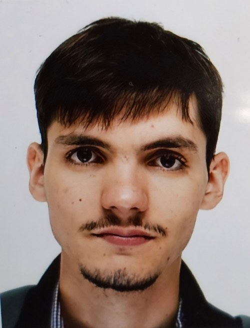

Education & internships
{{ t.date }}
Projects
{{ p.category }}{{ p.year }}
{{ p.title }}
{{ p.summary }}
Read more →
Other experience
{{ t.date }}
Outside work
Languages
Quadrilingual
Arabic, French and Polish natively; English professionally (my whole Master's was in English).
Sport
Judo
Black belt.
Speedcubing
Rubik's Cube
Former champion, 17 s average.
Side projects
Making games
I create my own web-based games, and remake old classics so they run on modern hardware.
Creative
Photography
Strategy
Chess
Next step: a PhD in AI.